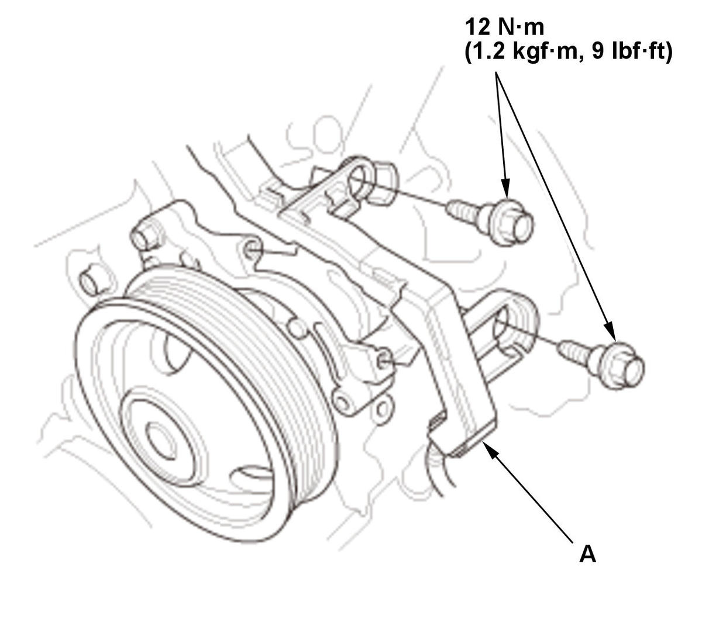
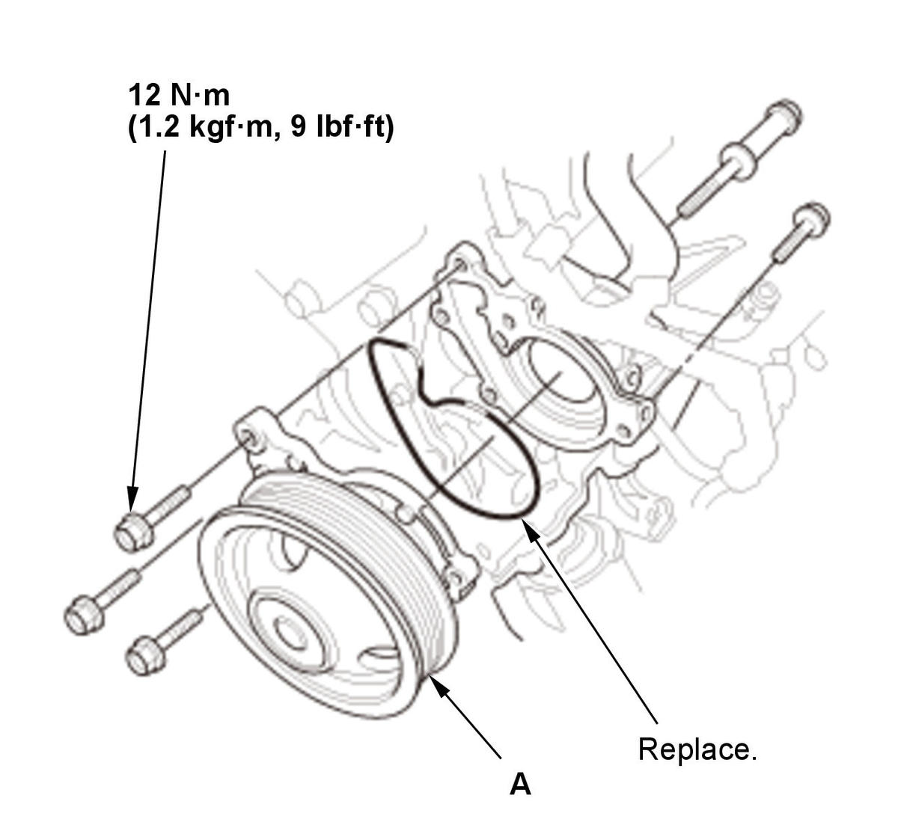

Removal and Installation
- Engine Coolant - Drain
- Drive Belt - Remove
- Drive Belt Auto-Tensioner - Remove
- Turbocharger - Remove
- Water Pump - Remove

Courtesy of HONDA, U.S.A., INC.1. Move the harness holder (A). 
Courtesy of HONDA, U.S.A., INC.2. Remove the water pump (A). - All Removed Parts - Install
1. Install the parts in the reverse order of removal.
NOTE: Inspect and clean the O-ring groove and the mating surface of the water passage.